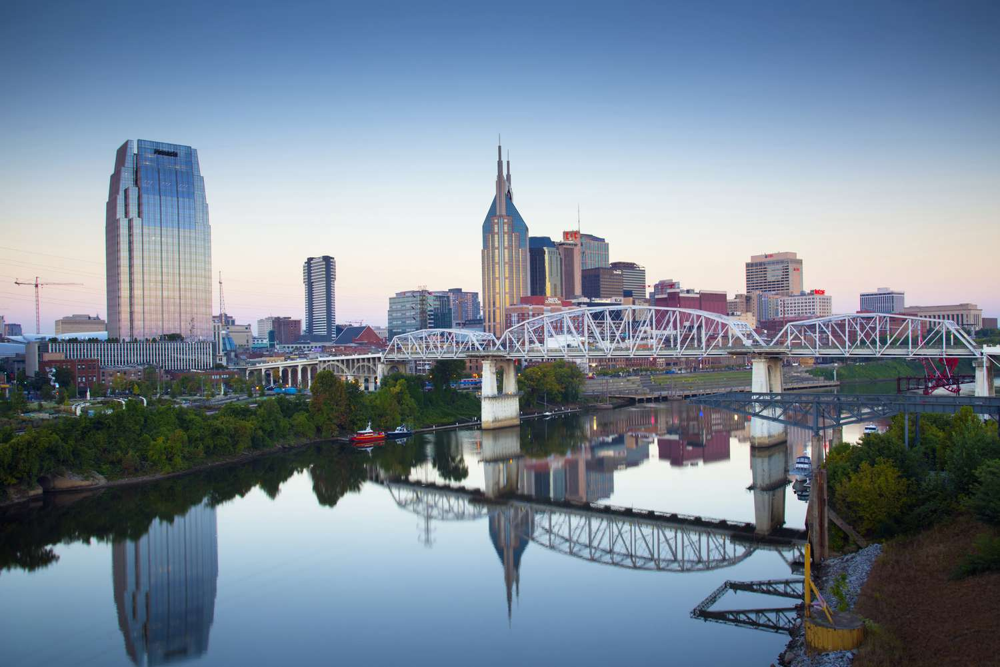
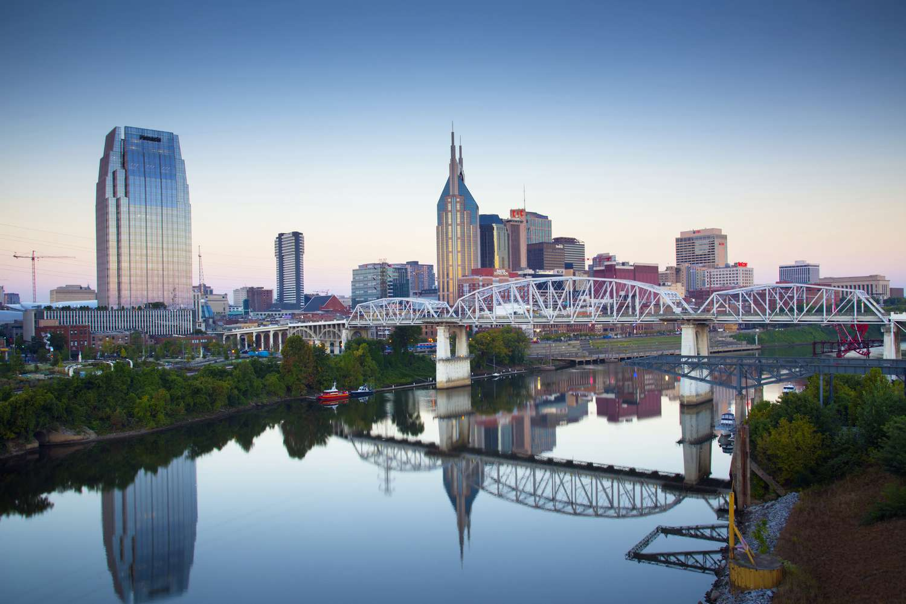

Los Angeles


Geographical Location: North America
Los Angeles is a sprawling Southern California city and the center of the nation’s film and television industry. Near its iconic Hollywood sign, studios such as Paramount Pictures, Universal and Warner Brothers offer behind-the-scenes tours. On Hollywood Boulevard, TCL Chinese Theatre displays celebrities’ hand- and footprints, the Walk of Fame honors thousands of luminaries and vendors sell maps to stars’ homes.
Los Angeles is famous for its idyllic, warm climate. Temperatures are high but pleasant all year round while rainfall is uncommon and mainly limited to the winter months.
Photo Gallery
Hawaii


Geographical Location: North America
Hawaii is the only U.S. state entirely made up of islands, and it is located approximately 2,400 miles (3,860 kilometers) southwest of California.
Hawaii is renowned for its stunning natural landscapes, including lush tropical rainforests, cascading waterfalls, volcanic craters, and pristine beaches with crystal-clear waters.
Photo Gallery


Monteverde, Costa Rica


Geographical Location: South America
Monteverde, Costa Rica is situated 4,662 feet above sea level. Monteverde’s famed cloud forests are the byproduct of fog (a thick, low-hanging cloud) tangling amongst the leaves and branches of the forest canopy. Trails and hanging bridges offer a close-up view of the diverse variety of animals and plants living in the forest.
One of the main tourist locations in Monteverde is the town of Santa Elena, which is not only home to a variety of restaurants with delicious food, but a serpentarium as well. You can enjoy hiking, ziplining, and observing the native wildlife while staying in Monteverde. It’s a truly beautiful place.
Photo Gallery


Nashville
 

Geographical Location: North America
Nashville is the capital and largest city of the U.S. state of Tennessee. Known as the "Music City," Nashville is famous for its vibrant music scene, cultural heritage, and thriving entertainment industry.
The heart of Nashville's entertainment district is located downtown along Broadway, often referred to as "Honky Tonk Row." This area is lined with honky-tonk bars and live music venues, making it a popular spot for visitors looking to enjoy the city's live music scene.
Photo Gallery